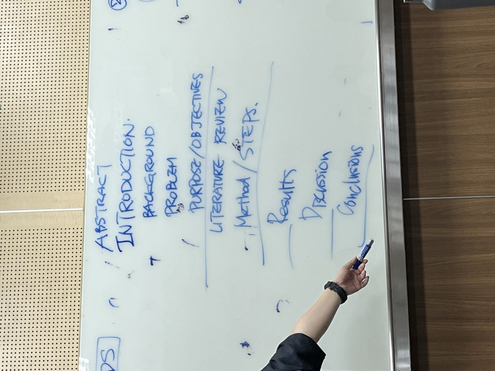

研究的流程
- 描述研究問題
- Purpose（目的）：長遠的目的，通常只有一個，偶爾分 major／minor。
- Objectives（目標）：這篇文章要達成的事，通常 3 個。
- Literature Review：綜合與評估文獻，例如從 30 篇文章中找出 insight。
- Method／Results：質化與量化常交叉呈現。
- Discussion：回到目標、問題、研究方法與預期結果。
想一想：哪一段對其他人最有價值？哪一段和其他段連結最多、哪一段最少？

AIMRDR：論文的各個部分
- I
Introduction 引言
由大到小：background → problem → purpose／objectives。
- L
Literature 文獻
找 key paper：看它怎麼架構、結果是否對應；找不到就找相似的來消化。都要和指導老師確認。
- M
Method 方法
跟著研究題目走，例如訪談、口語分析。
- R
Result 結果
跟著方法來，要對資料做總結。
- D
Discussion 討論
從收斂到發散，強化結果的影響。
- C
Conclusion 結論
這篇文章對世界有沒有影響。
- R
Reference 參考文獻
奠定研究的基礎，並在討論中連結其他人的研究。
為什麼要用這個結構
- 寫論文的第一步，先把這個結構貼上：內容跟著結構一起長，你會一直看到整體框架，框架也會幫助你思考。
- 文獻探討很花時間，常常是「兩天找、八天讀」。
- 研究文獻的類型：研討會摘要（例如 DRS、IASDR）、研討會論文（適合找新題目）、碩博士論文、期刊論文（例如 Design Studies）。
英文與閱讀練習
- 每讀完一章，用自己的話總結（可以用章節裡的字詞）。
- 請 AI 出題考你；用英文記筆記。
- 口說可以用 Speak 這類 app 練習；寫作可以請 ChatGPT 幫忙修改。
- 多讀書：練習在大量資訊中萃取重點，也練習找網路資料；找 AI 應用的例子本身就是練習。